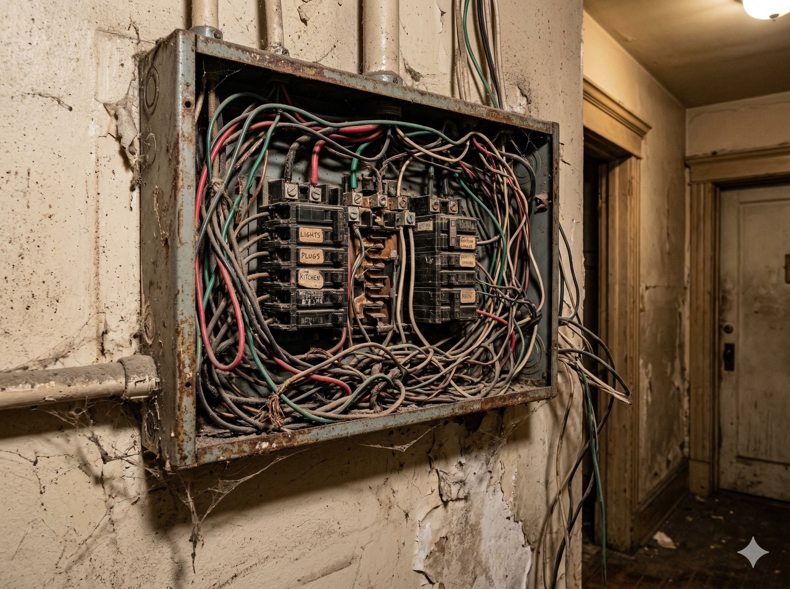
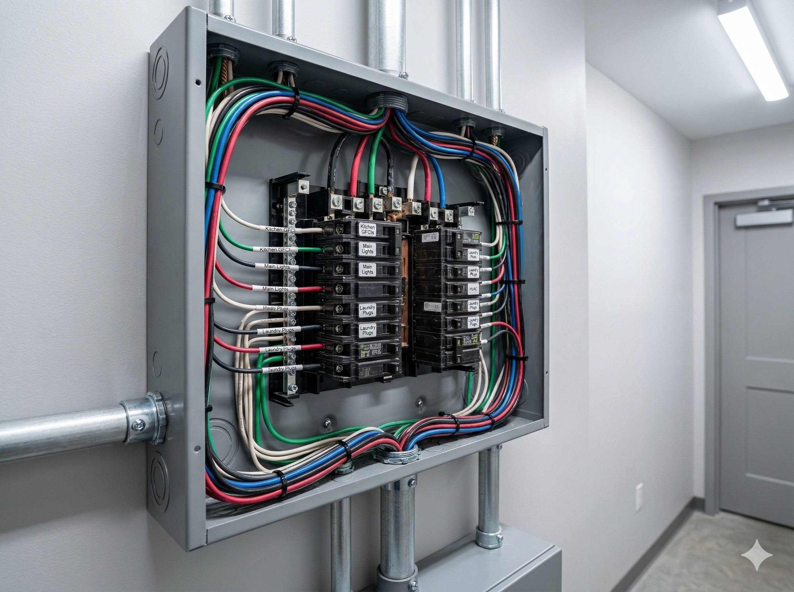

⚠ 現行用電安全法規與老屋隱患
依據現行法規，一般插座迴路須使用 2.0mm 單芯線，而冷氣、廚房專用迴路則需配備 5.5mm² 絞線。20年以上老屋常使用過細線材（1.6mm），且未配置漏電斷路器，面對現代高功率家電極易發生電線走火。
廣禹老屋翻修管線重拉 SOP
- Step 1 斷電與舊管線拆除： 確實關閉總電源，抽除老化硬化之舊電線與破損水管。
- Step 2 重新配置大容量電箱： 擴充無熔絲開關（Breaker），將照明、插座、冷氣、廚衛重耗電設備獨立分區。
- Step 3 佈管與穿線作業： 使用符合 CNS 國家標準之南亞 PVC 橘管及太平洋/華新麗華安全電纜。
- Step 4 接地與漏電保護： 浴室、廚房及陽台確實加裝漏電斷路器，並打設接地銅棒保障安全。
- Step 5 試水試電驗收： 使用高壓機測試水管耐壓無漏水，並以專業儀器檢測電壓穩定度與絕緣抗阻。
施工前後實績對比 (Before & After)
從雜亂無章的危險電箱，到分類明確、安全合規的現代化配電：

施工前 (Before)：管線老化裸露，無漏電保護。

施工後 (After)：迴路標示清晰，線徑升級並加裝漏電斷路器。